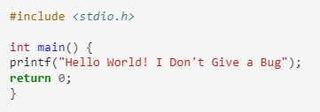
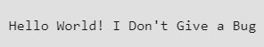
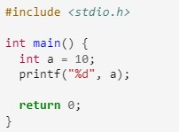
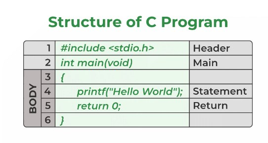

Introduction
What is C language?
C is a general-purpose, procedural, high-level programming language used in the development of computer software and applications, system programming, games, and more.
C language was developed by Dennis M. Ritchie at the Bell Telephone Laboratories in 1972. It is a powerful and flexible language which was first developed for the programming of the UNIX operating System. C is one of the most widely used programming languages.
Installation
C compiler is a software that translates human-readable C language code into machine code or an intermediate code that can be executed by a computer’s central processing unit (CPU).
There are many C compilers available in the market, such as GNU Compiler Collection (GCC), Microsoft Visual C++ Compiler, Clang, Intel C++ Compiler, and TinyCC (TCC).
For this tutorial, we will be using the GNU-based online C compiler provided by GeeksforGeeks which is developed for beginners and is very easy to use compared to other compiler/IDE’s available on the web.
Example
Output
Why we learn C?
Many later languages have borrowed syntax/features directly or indirectly from the C language like the syntax of Java, PHP, JavaScript, and many other languages that are mainly based on the C language. C++ is nearly a superset of C language (Only a few programs may compile in C, but not in C++).
So, if a person learns C programming first, it will help them to learn any modern programming language as well. Also, learning C helps to understand a lot of the underlying architecture of the operating system like pointers, working with memory locations, etc.
C Basics
Writing the First Program in C
The following code is one of the simplest C programs that will help us understand the basic syntax structure of a C program.
Example
Output

Structure of C program
- Header Files Inclusion – Line 1 [#include
] - Main Method Declaration – Line 2 [int main()]
- Body of Main Method – Line 3 to Line 6 [enclosed in {}]
- Statement – Line 4 [printf(“Hello World”);]
- Return Statement – Line 5 [return 0;]